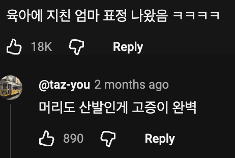
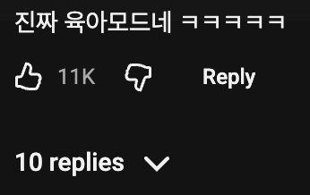
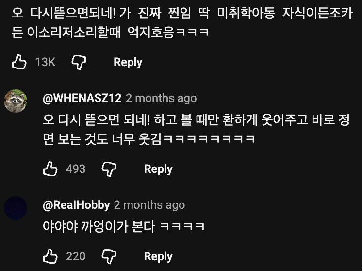
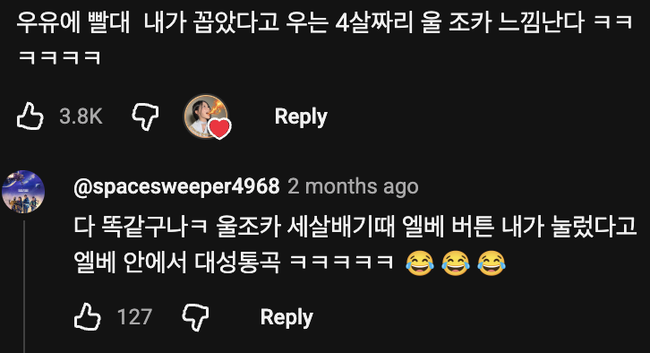

16초 ㅋㅋㅋ
가영이 요새 차분해졌다... 으른 다 됐다...
미치겠다ㅋㅋㅋ
머리랑 옷때문에 더 애기엄마같네 ㅋㅋㅋㅋ
이번에 안원잘부 원이 없는거에서 원이의 존재를 진짜 크게 느꼈다
무도에서 유재석 빠진거지
ㄹㅇ 미나미가 제일 똑똑하고 어른스러운것 같다가도 그건 원이 있을때만 나오는 바이브였음 ㅋㅋ
ㅇㅈㅋㅋ
난 또 원이가 귀여운점이 멤버들이랑 있을땐 맏언니 느낌이 나는데 으른 한분만 계시면 바로 애기 모드되는게 귀엽더라
원이가 어른스럽다고 느껴지는게 다 단련이 된거구먼ㅋㅋㅋㅋㅋㅋㅋㅋ
ㅆㅂ ㅋㅋㅋㅋㅋㅋㅋㅋㅋㅋ
딴영상보면 원이가 동생들 먹으라고 국밥 사왔는데 제나, 메이가 자기들은 팥빙수 먹고 싶었다며 그냥 안먹겠다고 하니까 원이가 빡쳐서 그냥 부엌으로 나오란 것도 웃겼었는데 ㅋㅋ
미나미: 이 짜식들이!!
볶음밥 아닌교
ㅋㅋㅋㅋㅋㅋㅋ 존나 애새끼 모먼트네ㅋㅋㅋ
근데 그게 엄청 옛날도 아니도 이번 여름때 이야기임 ㅋㅋㅋㅋ
나 안먹는다고 해쨔나!!
나 빙수 먹는다고 했써!!
얘네 4살차이긴 한데 첫만남이 중딩일때 20살 언니 본거라서 어른처럼 느끼긴 할거같음ㅋㅋ
지금은 뭘해도 이뻐 보이니까 댓글들도 전부 호의적인데
이 폭풍이 지나면 애들이 견딜수 있을지 걱정이 되네
나도 리센느 참 좋아하는데, 요즘 좀 비슷한거 느끼긴 함. 특히 제나 쪽으로.. 뭐 별 탈 없이 잘 지내길 바랄 뿐
애들의 능력이나 체급보다 대중들의 호감도가 가끔 지나치게 높다고 느껴짐. 마치 아이에게 우쮸쮸 해주는걸 보는것 같을 정도로. 아직은 대중들의 호감도가 크니까 인기는 한동안 유지되겠지만 곧 예능이든 무대든 애들의 실력으로 평가를 받는 날이 올텐데 그때 대중들의 냉정함을 견뎌낼수 있을지... 다행인건 그래도 멤버들이 모두 겸손하고 인기없던 시절을 미리 겪었다는거.
근데 보면 볼수록 원이 우리회사 선배랑 비슷하게 생김
걍 잼민이임ㅋㅋㅋㅋ